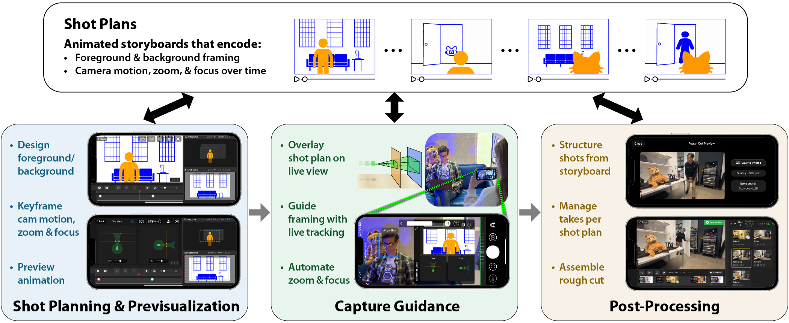

Our tool, CineCraft, uses animated storyboards—shot plans (Top)—to unify three stages of mobile filmmaking. Our shot planning interface (Left) lets users design and previsualize shots by keyframing foreground/background layers and camera motion. During capture (Center), we overlay the shot plan on the live view, track subjects to guide framing, and automate zoom and focus. During post-processing (Right), we use the planned storyboard to group captured footage under each shot panel, let users select the best take for each shot, and string them into a rough cut—all within a single app.
Abstract
We present an interactive mobile application that supports the design, AR guided capture, and post-processing (stabilization, take management, and rough cut assembly) of cinematic shots on mobile devices, unifying filmmaking stages that traditionally require separate tools and personnel.